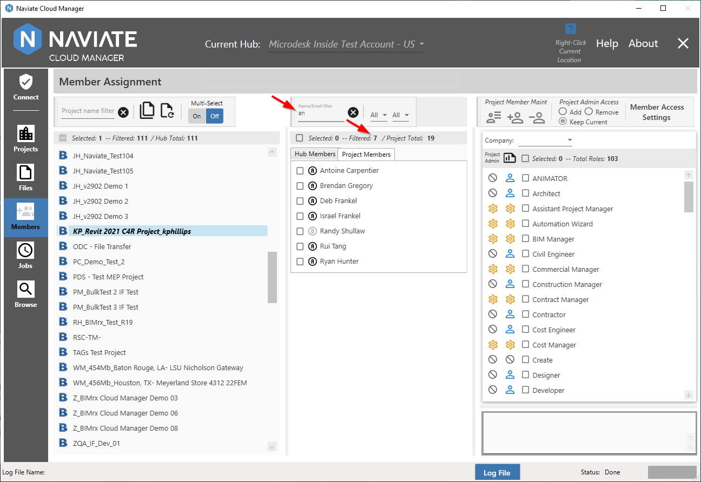
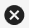
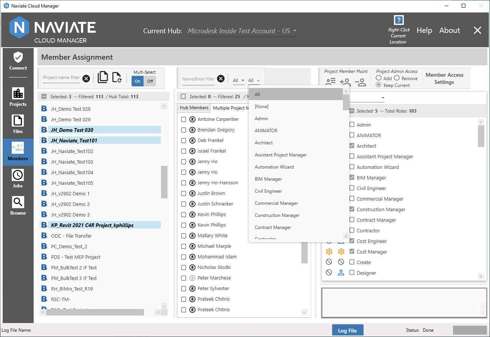
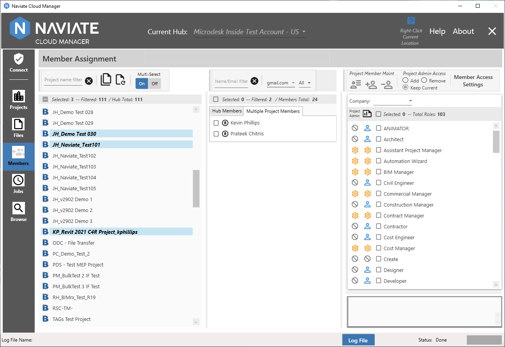
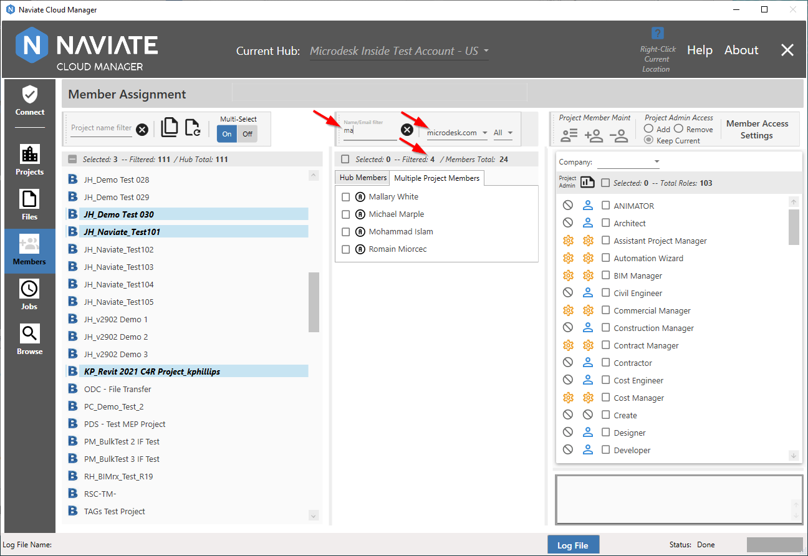
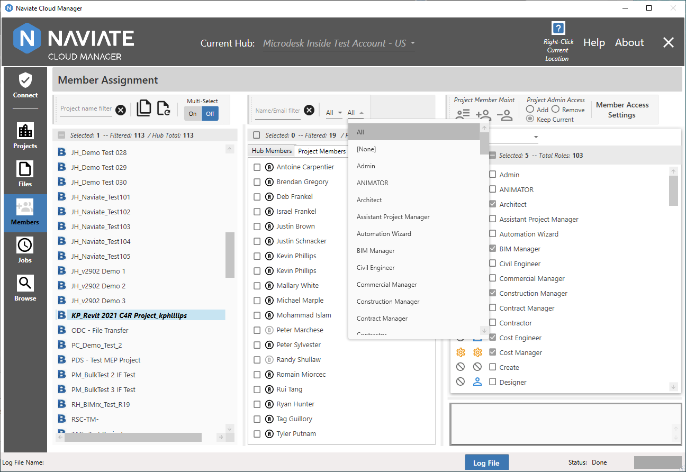
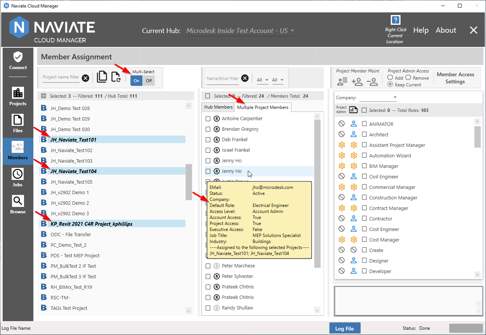
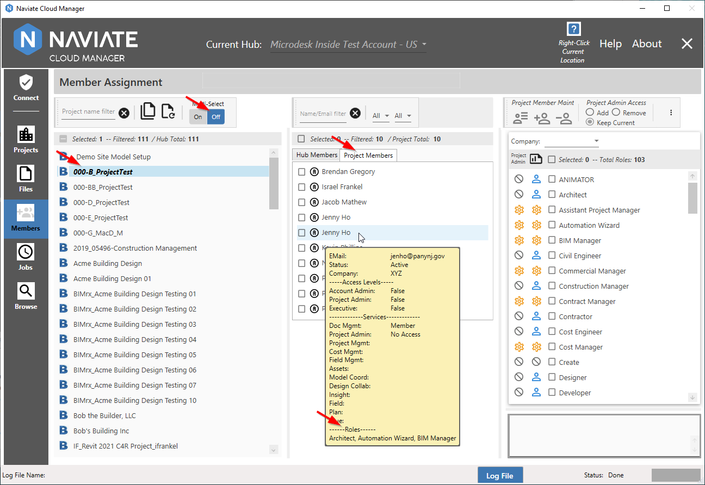
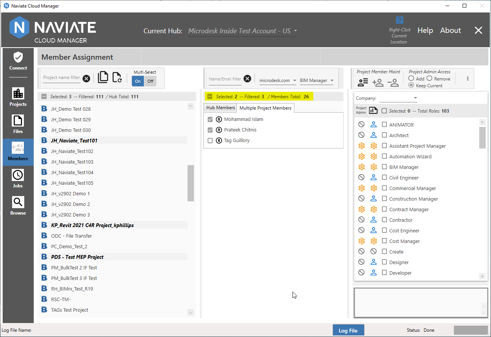

Project Members Filter and Display
Naviate Cloud Manager incorporates several tools for filtering and displaying Project Members for the currently selected project(s). Project member filtering and selection applies to both Single- and Multi-Select projects. Please note — the filtering specifics described here apply to Project members only. For Hub member filtering, please refer to Hub Members Filter and Display.
The Name/Email filter is used to filter on both each project member's Name and/or Email address. As with the Project Filters — found in the Members module and elsewhere throughout the application — text entered here is applied anywhere within the Name and Email address for each member. This means that based on a single filter entry, one project member might be selected based on a Name match while another is selected based on an Email match.

As expected, as each letter of the filter is entered, the list narrows automatically based on finding a match for the filter anywhere in the Name or Email. Pressing the  Clear button resets the filter and refreshes the list. Also, notice the filtered total display that, along with the selected and Hub total amounts, assists in managing Project member browsing and selecting activities.
Important — All project filters described in this section apply to both Single- and Multi-Select projects.
In addition to the member Name/Email filter, there are two other mechanisms available filtering projects.
Next, Naviate Cloud Manager provides an email filter.

The email filter selection list contains an entry for each email address found in the list of Hub members.

As expected, this filter can be used in combination with any of the other filters.

The second second project filter provides a way to filter selected project members by their assigned Default Role.

The Role list (shown above) displays a list of all available roles for the current Hub. Selecting a Role from the list filters the list of Project members — along with any of the other filters that are set — by the selected member Role. In addition to selecting a specific default Role, selections of All and None are also available.
Tip — Use the [None] selection to identify all Hub members not having a default Role assigned.
According to whether project selection is set to Single- or Multi-, the nature of the member role will vary slightly. When Multi-Select = On, multiple Multiple Project Members can be selected.

Also, with Multi-Select = On, the Default Role member information is the same as displayed for the Hub member information. Only one Role is displayed and this is the Role that is used when the filter is applied to determine whether the member is displayed or not.
When Multi-Select = Off, Single Project Member is specified and a different source of data is accessed.

As shown above in the Project Member information popup window, all roles assigned to a project member are displayed. Depending on the member, this could include many different roles. These roles, shown above, are those that are used to determine if a member is a match for a selected Role filter setting. For example, the project member shown above will be displayed if either Architect or Automation Wizard or BIM Manager is selected. As opposed to the single Default Role that is used when Multi-Select is set to On, as described above.
The count totals bar displays numerical count totals to assist in filtering and selecting members.

The Selected number represents how many members are currently selected. Likewise, the Filtered number displays how many members have matched all entered selection criteria and are currently displayed. The Members Total (or Project Total, if Multi-Select = Off) displays the total number of members that currently belong to the selected Hub (or project).
The checkbox at the far left of the status display provides a fast and easy mechanism for un-selecting all selected project members. When one or more members are selected, the box will appear as shown above, with a 'minus' sign in the checkbox. Clicking in the minus box will un-select all selected members. Project member selection works in exactly the same manner as Hub member selection, as described in Select Hub Members.